Using Open Geospatial Data in GIS
1 Why Open Geospatial Data?
In the world of data, open means different things. First, it’s about who can access and use the data. Second, it’s about how that data can be used - from the transparency of its creation and handling to the standards and protocols that make the data accessible.
Thanks to advances in computing and the internet, many organizations now embrace open data policies to share, access, and create value from data.
Having an open data policy offers several key benefits:
Greater transparency, especially for governments. When data is open, citizens can see and understand what their government is doing.
Increased public participation. Open data allows citizens to engage with and contribute to solutions for their communities.
Faster and more significant advances in knowledge. Instead of spending time and money generating new data, researchers can build on existing information.
Better reproducibility of research results. Other scientists can verify and build upon previous work.
Improved informed decision-making, particularly for global-scale problems. When decision-makers have access to good data, they make better choices.
Open geospatial data is especially crucial for tackling global challenges like climate change, urban development, and disaster response. In these situations, quick access to accurate location-based information can make the difference in coordinating effective responses and making smart decisions.
2 Sources reviewed in this tutorial
In this guide, we’ll explore ways to access and use open geospatial data, focusing on OpenStreetMap and Overture Maps for Geographic Information Systems (QGIS specifically). These tools are powerful resources that anyone can use to work with location-based data.
2.1 OpenStreetMap OSM
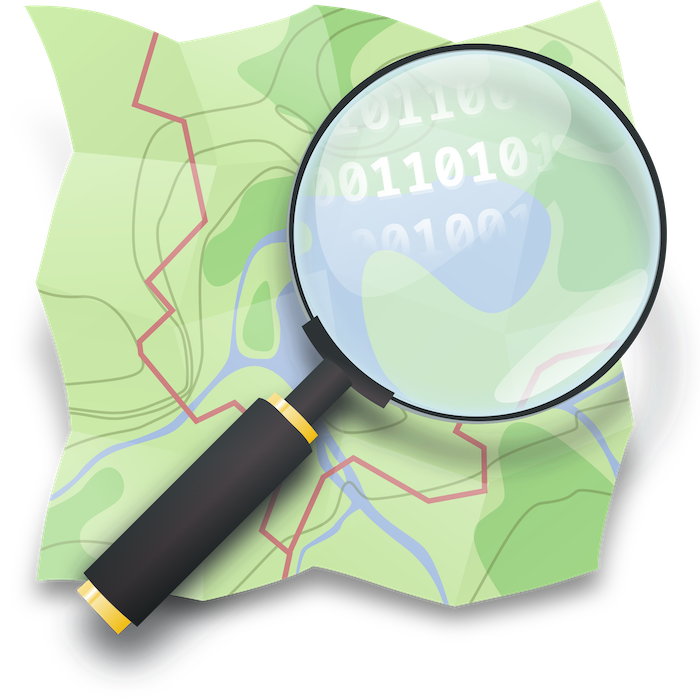
OpenStreetMap (OSM) is a collaborative world map that anyone can edit and use - think of it like “Wikipedia for maps.” It is created by volunteers worldwide who add and update geographic information about roads, buildings, parks, businesses, and other features. People contribute data based on their local knowledge, GPS tracks, aerial imagery, and field surveys.
Key aspects of OSM:
Community-driven: The data is collected and maintained by a global community of mappers, from hobbyists to professional geographers.
Truly open: Unlike commercial maps, OSM data is freely available for anyone to download, use, and modify under an open license (Open Database License).
Used everywhere: The data powers thousands of applications and services - from humanitarian crisis response to navigation apps, urban planning tools, and games.
Constantly updated: Because anyone can contribute, OSM often has more up-to-date information than commercial maps, especially in rapidly changing areas or after natural disasters.
These are only some of the communities building OSM. Explore more communities here
The project started in 2004 in the UK and has grown into one of the largest collaborative mapping efforts in the world. Today, OSM is often considered the most comprehensive free source of geographic data available.
Although you don’t need an account to explore the map, you can sign up if you want to contribute edits or be part of the communities related to the project.
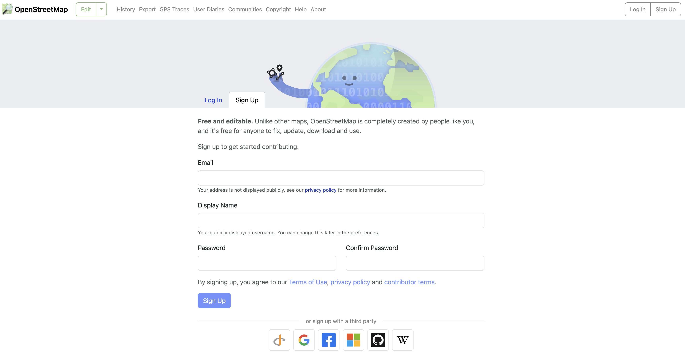
2.2 Overture Maps
Overture Maps is a newer collaborative effort launched in 2022 by major tech companies including Meta, Microsoft, Amazon (AWS), and TomTom. It combines information from multiple sources - including commercial datasets, open data, and machine learning - to create a high-quality, standardized global map.
Key aspects of Overture Maps:
Quality-focused: It uses sophisticated data validation and conflation techniques to ensure accuracy and consistency of geographic information.
Business-friendly: While free and open like OSM, it’s specifically designed to meet enterprise-level mapping needs with reliable, standardized data.
Modern architecture: Built from the ground up to handle today’s mapping challenges, with a focus on regular updates and clear data lineage.
Multiple sources: Instead of relying solely on volunteer contributions, it combines different data sources including commercial data, open data, and machine-derived features.
The project released its first major dataset in 2023 and aims to provide an alternative foundation for building mapping applications and services. While newer than OSM, it’s designed to complement rather than compete with existing open mapping projects.
3 Exploring the data
3.1 In OpenStreetMap
01 Go to https://www.openstreetmap.org/ on your web browser
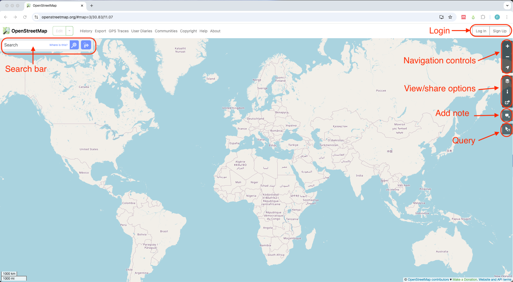
The screen will show a big area with a map on the center. To explore the map you can use the Search bar located on the top left corner. Simply type the name of a place or a street address and click enter/return or the search icon. You can also use the Navigation controls (zoom in +/zoom out -/show my location) located on the top right corner of the map.
02 Type the name of a place in the search bar.
When you type the name of a place in the Search bar, OSM will show you a list of options found in Nominatim.
Nominatim is an open-source geocoding software used to find addresses and places in OSM.
Here we typed Philadelphia and we get six main results: the city of Philadelphia, Pennsylvania, the county with the same name, a town named Philadelphia in Mississippi and three other villages named like that in other states. Notice the map has zoomed in to the city of Philadelphia, PA. The results you get are based on the current view of your map. If you want to see more results you can click on the button More results.
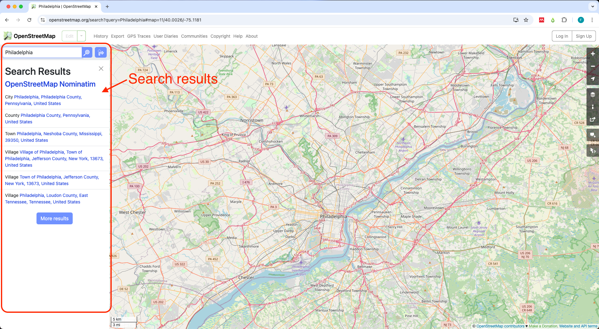
03 Click on the result you want to explore.
When you click on a result, the left panel will show the selected element info and tags. On the map, you would see the element highlighted in orange.
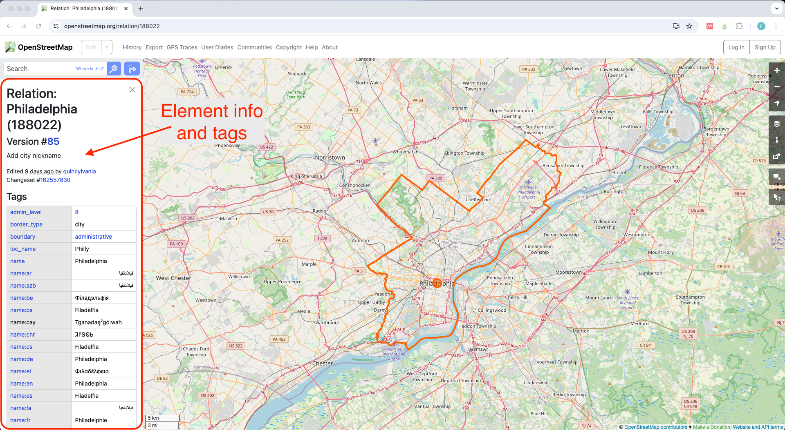
In this example we see an area highlighted in orange that corresponds to the city of Philadelphia along with a node in the center of this area. On the left side panel we see a list with all the tags assigned to this element. For example: border_type:city, boundary:administrative, and loc_name:Philly.
All data in OSM is represented by an element.
An element can be either a node  , a
, a way  or a
or a relation  .
.
Each element is described using tags which are the combination of a key and a value  . For example, a coffee shop is represented by an element type
. For example, a coffee shop is represented by an element type node with tags amenity=cafe.
Learn more about elements and tags here.
3.1.1 Querying the data
Now lets query the data we see on the map to discover the type of element and what tags are being used to describe it.
04 Type the name of a place in the search bar.
We are going to explore a more local area by typing charles library, philadelphia in the search bar. This will zoom in the map further.
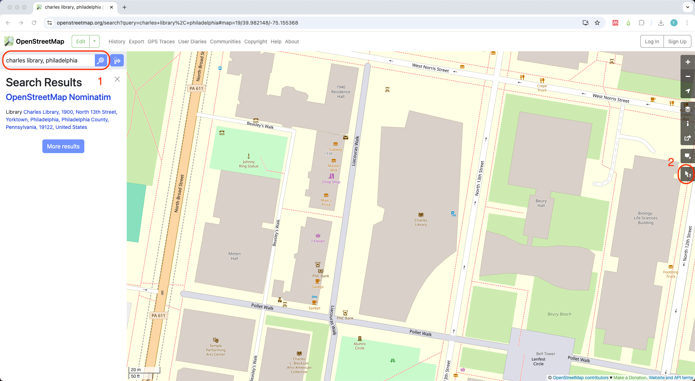
05 Click on the ‘Query features’ tool.
On the right side of the screen, click on the Query features tool
You will notice the mouse cursor icon will change to a question mark.
06 Click on any element you see on the map to query.
Now, if you click on any area of the map, the left side panel will show two lists: ‘Nearby features’ and ‘Enclosing features’. The Nearby feaures list will have all elements close to the point you clicked on the map. In this example, we got seven results.
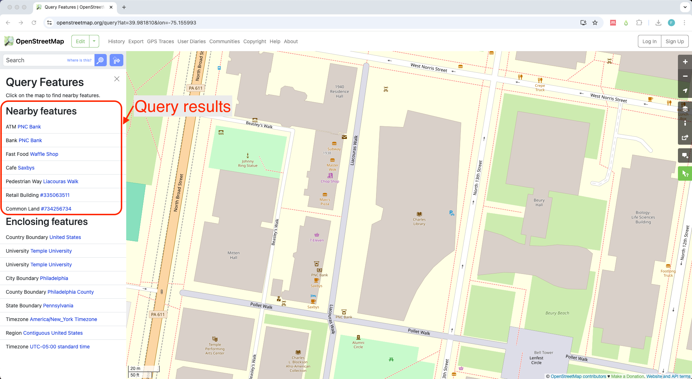
07 Explore the results.
If you click on any of the results, the left side panel will show the element details and tags. In this example, we clicked on ‘Saxbys’, which is a coffee shop by Charles Library.
As you can see, this element has five tags that describe it including its name, opening hours, and wheelchair accessibility. An element can have unlimited number of tags, however, some of them might be auto-exclusive. See more details on OSM tagging system here.
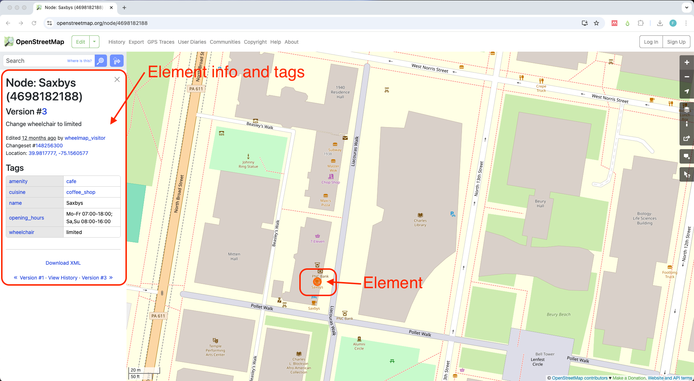
To add or modify tags and elements on the map you need to sign up for an OSM account here.
3.2 In Overture Maps
01 Go to https://explore.overturemaps.org/ on your web browser
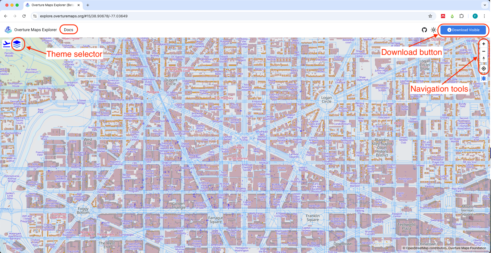
02 Find your location on the map
Unlike OSM, the Overture Maps explorer does not have a search bar. The best way to find a location is either clicking on the ‘Find my location’ button or using the navigation controls (zoom in and zoom out).
The first time you use the ‘Find my location’ tool, you will be asked to allow the browser access. If you are ok with this, simply click on ‘Allow this time’.
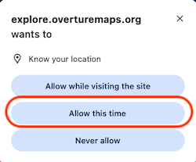
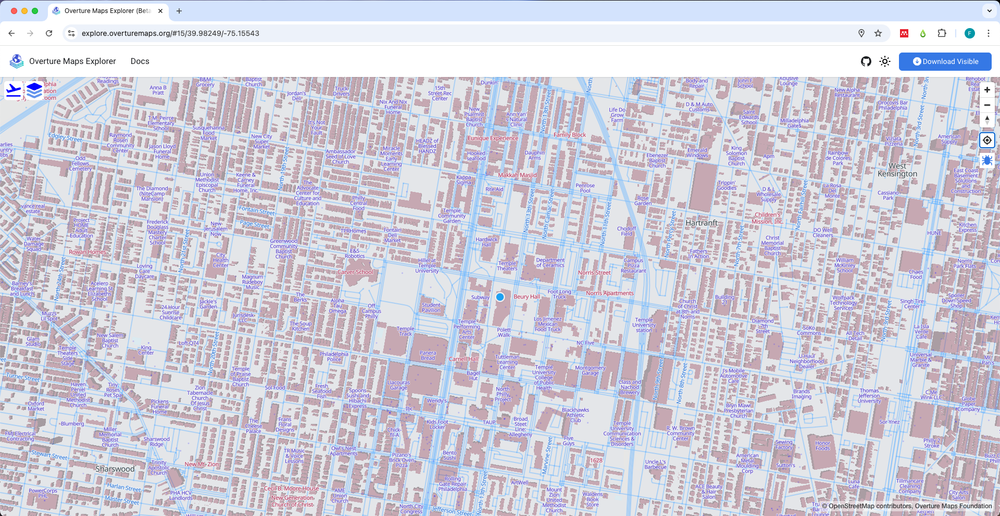
03 Click on any of the features you see on the map
When you click on any feature on the map, a popup window will display the feature(s) you clicked on, the bounding features (those that contain the clicked feature, like the city, the county it is on). This popup window will display the names of the features along with icons that represent the feature ‘type’. In this example we can see there is a ‘Charles Library’ place and building .
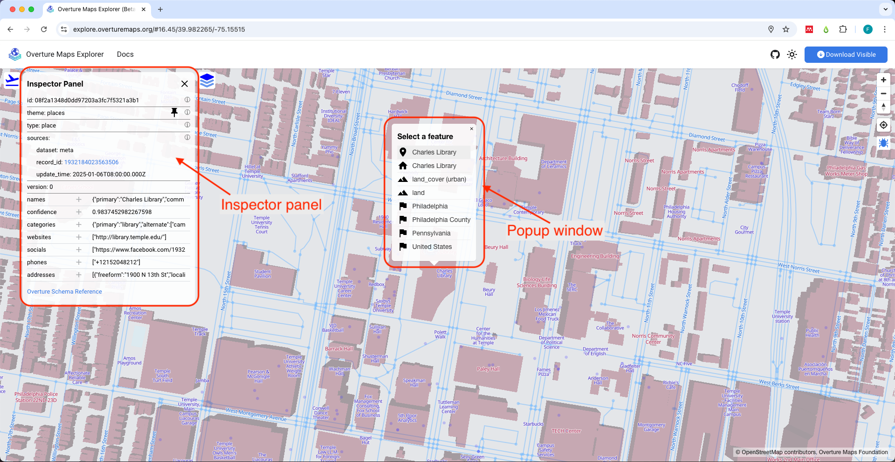
On the left side of the screen, an ‘Inspector Panel’ will show the properties of the selected feature, including: the type, sources, names and others depending on the feature type.
3.3 In QGIS
There are some ways to explore OpenStreetMap data in QGIS without downloading the data. The easiest way to do this is using OSM raster tiles. Follow the steps below to see OSM data in QGIS.
If you don’t have QGIS installed, go to https://qgis.org/download/ and follow the instructions to download the latest version for you operating system.
01 Open QGIS
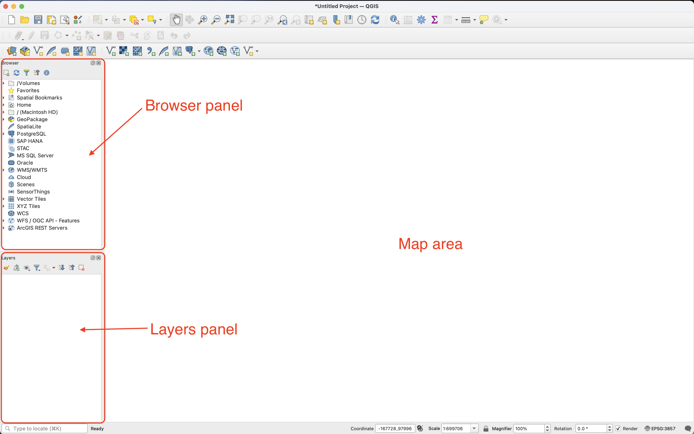
02 Add a raster tile connection
In the Browser panel, right-click on XYZ Tiles, then click on New connection.
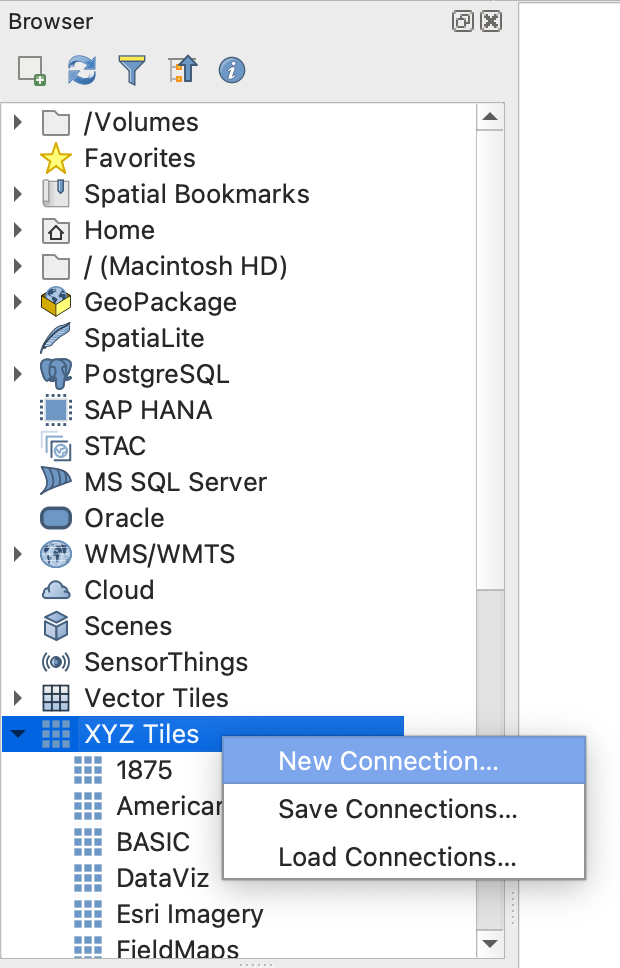
03 Set the new XYZ connection
In the new window, type OSM as the name for your connection. Then copy and paste this line https://tile.openstreetmap.org/{z}/{x}/{y}.png in the URL space under ‘Connection Details’.
Then click OK.
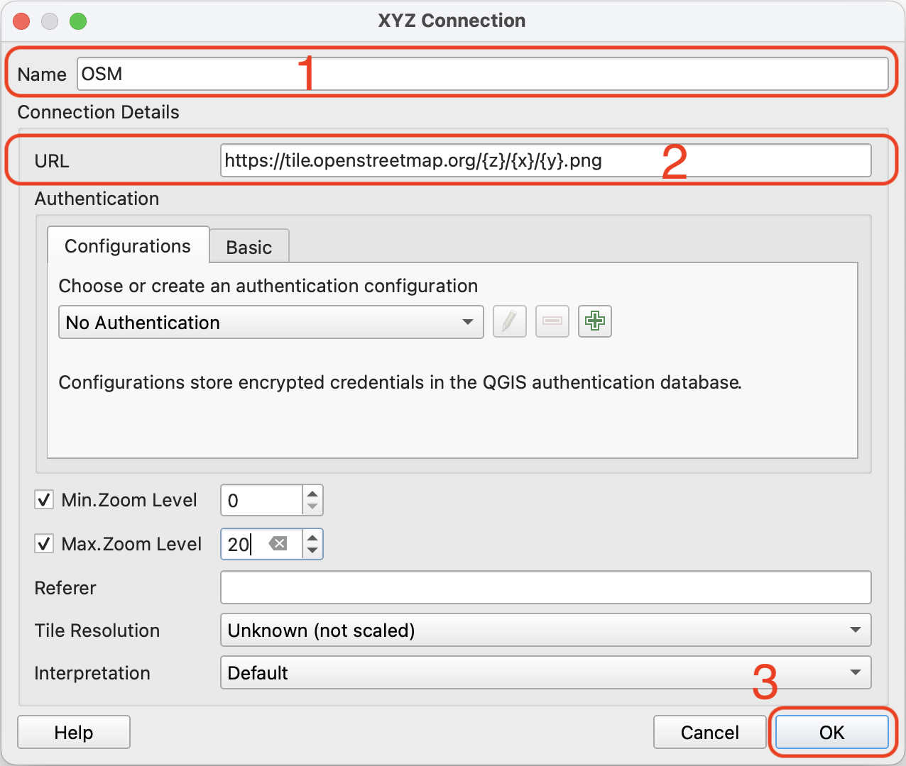
04 Add the XYZ tiles to the map
Find the OSM XYZ raster tiles you created on previous step on the Browser panel and drag it to the Layers panel or directly to the map area.
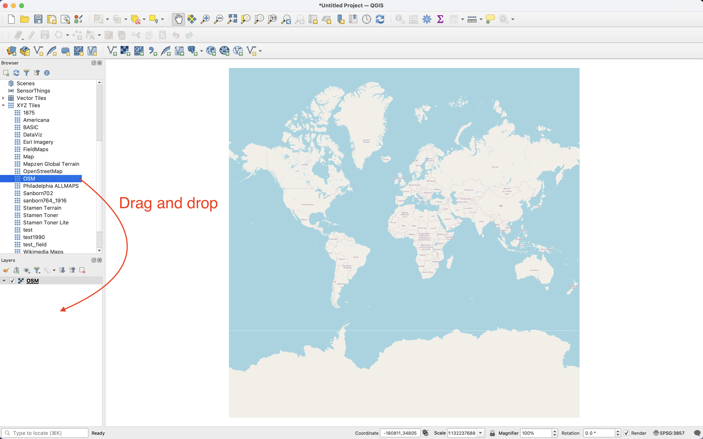
05 Zoom in to the desired area on the map
Using the zoom in tools located in the top of the screen on QGIS you can locate the area you want to see. The map will show more details based on the level of zoom you are in. Ypu can use this raster tiles as a basemap in your projects.
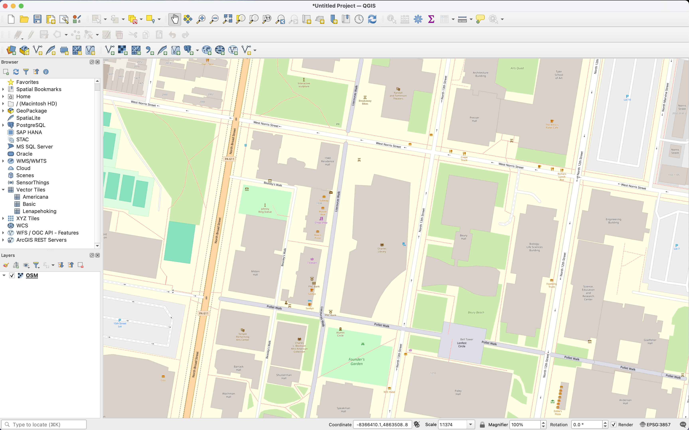
OSM tiles are served through the internet. The speed at which the map loads depends on your internet connection.
4 Downloading the data
There are multiple ways to download data from OSM and Overture Maps. In this tutorial we focus on how to download data directly to QGIS.
4.1 From OSM to QGIS
01 Install QuickOSM plugin
Open QGIS.
On the top menu bar click on ‘Plugins’ and then on ‘Manage and Install Plugins’.
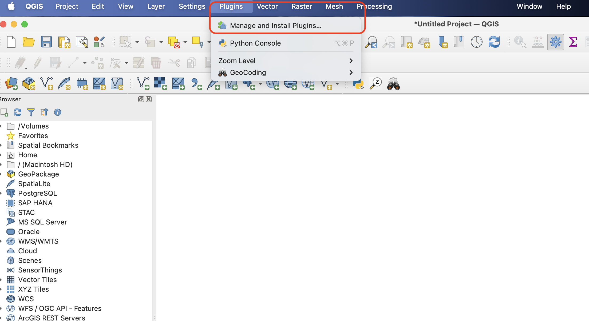
On the new window, in the search bar type quickosm, then click on ‘Install plugin’. Once installed, close the plugins manager window. Learn more about QuickOSM plugin
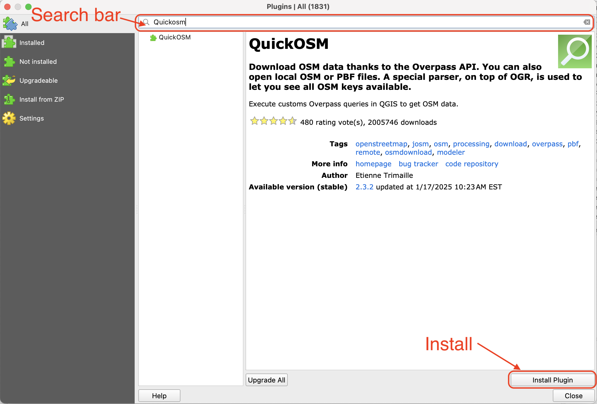
02 Build a query to download data
‘QuickOSM’ plugin uses overpass API, which is is a read-only interface that allows users to query and extract specific data from the OpenStreetMap (OSM) database using a custom query language.
To build a custom query:
- Click on the ‘QuickOSM’ button on the toolbar
- On the new window:
- Add
amenityon the key space andparkingon the value space. - Add
Philadelphia, PAon the ‘in’ space. - Click on ‘Run query’.
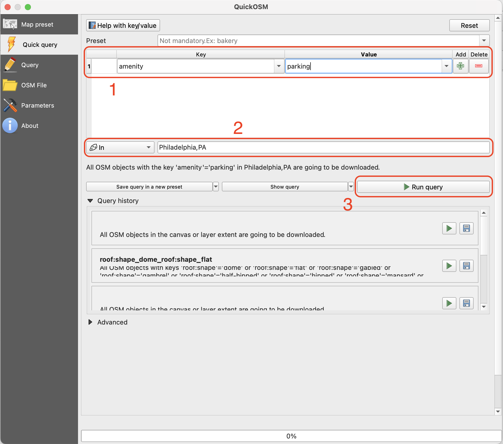
This will generate a query to retrieve all elements tagged as ‘amenity’=‘parking’ in the city of Philadelphia.
After the download is done, close the ‘QuickOSM’ window and go back to the map.

Learn more on how overpass queries work in this tutorial.
03 Save and style the layers
The data downloaded is stored as a temporary file in your system.

If you want to use it further from this session in QGIS you first need to save the files in your system.
To do so:
- Right click on the name of the layer you want to save.
- Click on the option ‘Make permanent’ or ‘Export’ and then ‘Save feature as…’.
- In the new window, select the format for your file, a name and, a location.
- Then click ‘OK’.
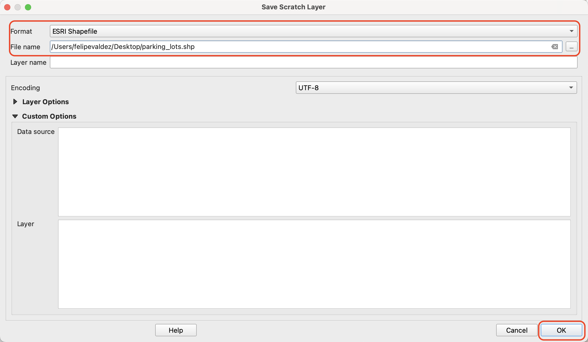
There are other options to download data usin ‘QuickOSM’ plugin.
You can try preset downloads, play around with different combinations of key and value, or download all data for a specific area. To download all data for a specific area, take into account that the amount of data can exceed your system capacity. Start downloading smaller areas to test.
For example, zoom in to a neighborhood or block, then in the ‘QuickOSM’ plugin window use ‘Canvas Extent’ then execute the query.
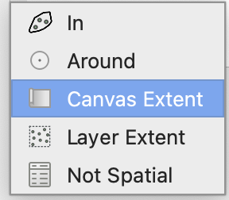
4.2 From Overture Maps
To download data from Overture Maps directly to QGIS we are going to use two plugins:
QduckDB and GeoParquet Downloader.
Follow the steps forward to download data directly to QGIS.
01 Install DuckDB plugin
Open QGIS.
On the top menu bar click on ‘Plugins’ and then on ‘Manage and Install Plugins’.
On the new window, in the search bar type qduckdb, then click on ‘Install plugin’. Once installed, close the plugins manager window.
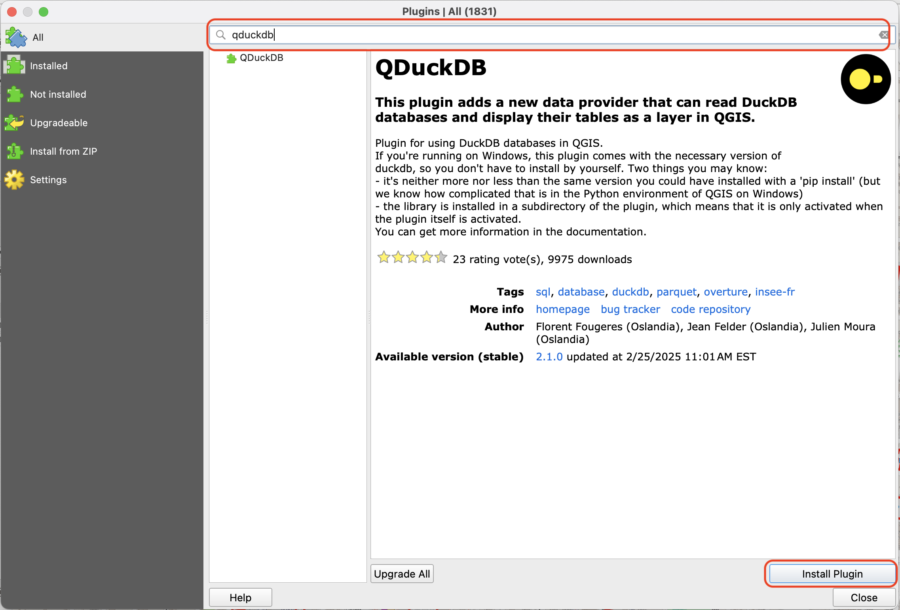 Go back to the Plugins amanger and check that the ‘QduckDB’ plugin is activated (with a check mark).
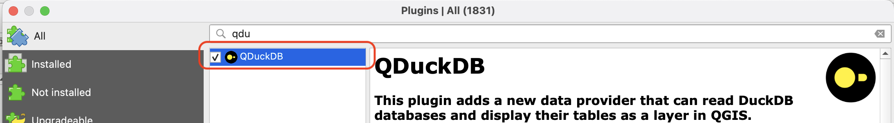 If not, check the box.
If you get an error message, follow the instructions in the following warining box.
Depending on the oprating system you are using, the QduckDB plugin will need some extra steps to function correctly.
On MacOS:
- Open the terminal app

- Type the following:
/Applications/QGIS.app/Contents/MacOS/bin/python3.9 -m pip install "duckdb==1.2.0"- In terminal, locate and open the plugin file by typing:
open ~/Library/'Application Support'/QGIS/QGIS3/profiles/default/python/plugins/qduckdb/gui/- Open the file
dlg_add_duckdb_layer.pyon a text editor app. 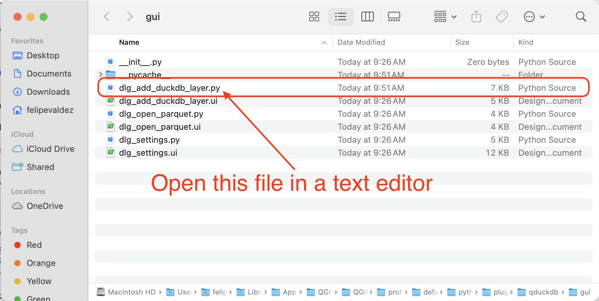 - Add the followin to line 3:
import typing- Replace the text on line 89 with:
def db_path(self) -> typing.Union[Path, None]:- Save the file.
- Reopen QGIS.
- Activate QduckDB plugin.
02 Install GeoParquet Downloader plugin
On the top menu bar click on ‘Plugins’ and then on ‘Manage and Install Plugins’.
On the new window, in the search bar type geoparquet downloader, then click on ‘Install plugin’. Once installed, close the plugins manager window.
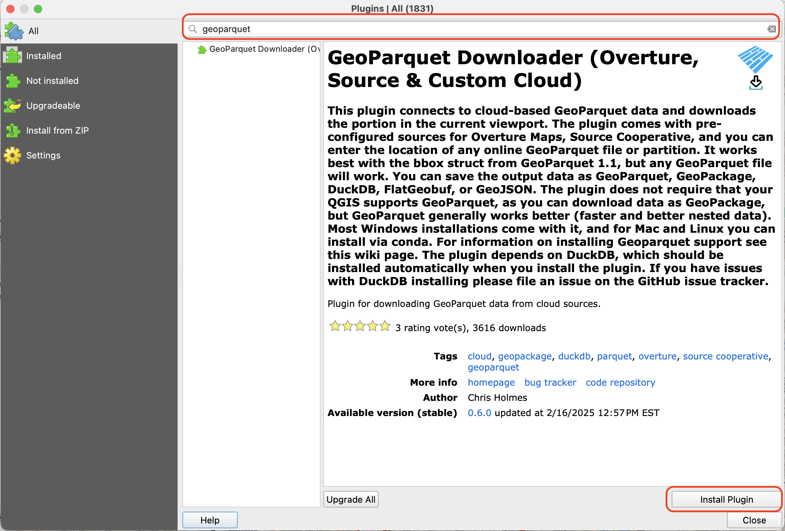
You should see the following icons on your tool bar 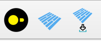
If not, right click on any empty space on the tool bar and activate the ‘Plugins toolbar’. 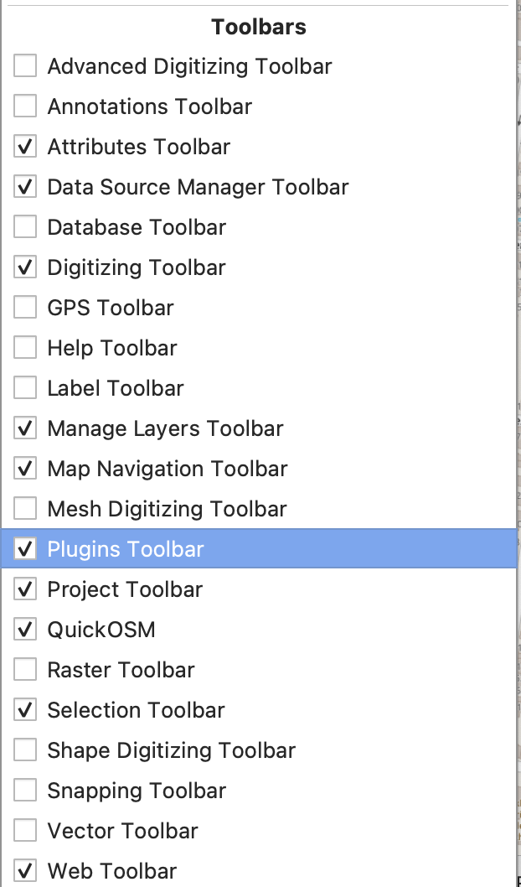
03 Select the data source and type to download
GeoParquet is a geospatial extension of ‘Apache Parquet’ format that efficiently stores geographic data in a columnar structure. It provides optimized compression, native support for geometries (points, lines, polygons), and includes spatial metadata like coordinate reference systems.
- Click on the ‘Download GeoParquet Data’ button on the toolbar 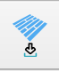
- In the new window, select the source ‘Overture Maps’ and the types you want to download. 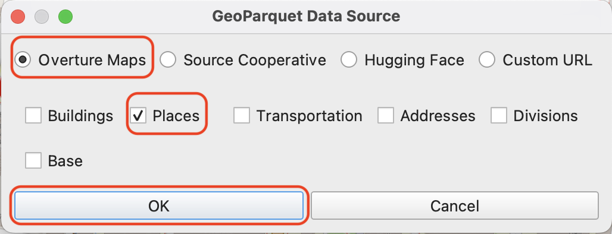
- Set a directory and name where you want to save the file.
The ‘GeoParquet Downloader’ will download data for the current map extent. Be sure to limite the view to a local area to avoid saturating the download process.
Once the download is complete you should see a message like this: 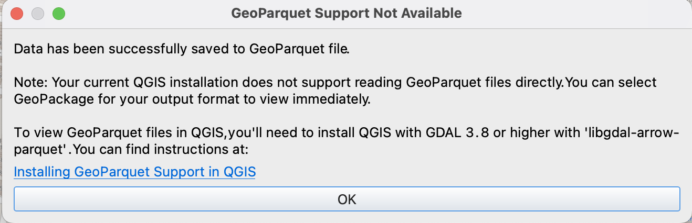
04 Open the downloaded data
- Click on the ‘Open Parquet with DuckDB’ button on the toolbar
- Point to the file you downloaded in the previous step and set EPSG:4326 as the CRS.
- Click ‘Open’
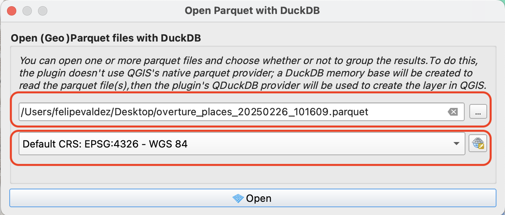
The resulting map shows all places around Temple University downloaded from Overture Maps

Attribution
Open Geospatial Data by Felipe Valdez is licensed under CC BY-NC-SA 4.0